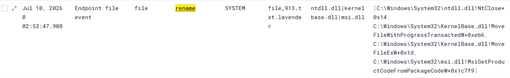
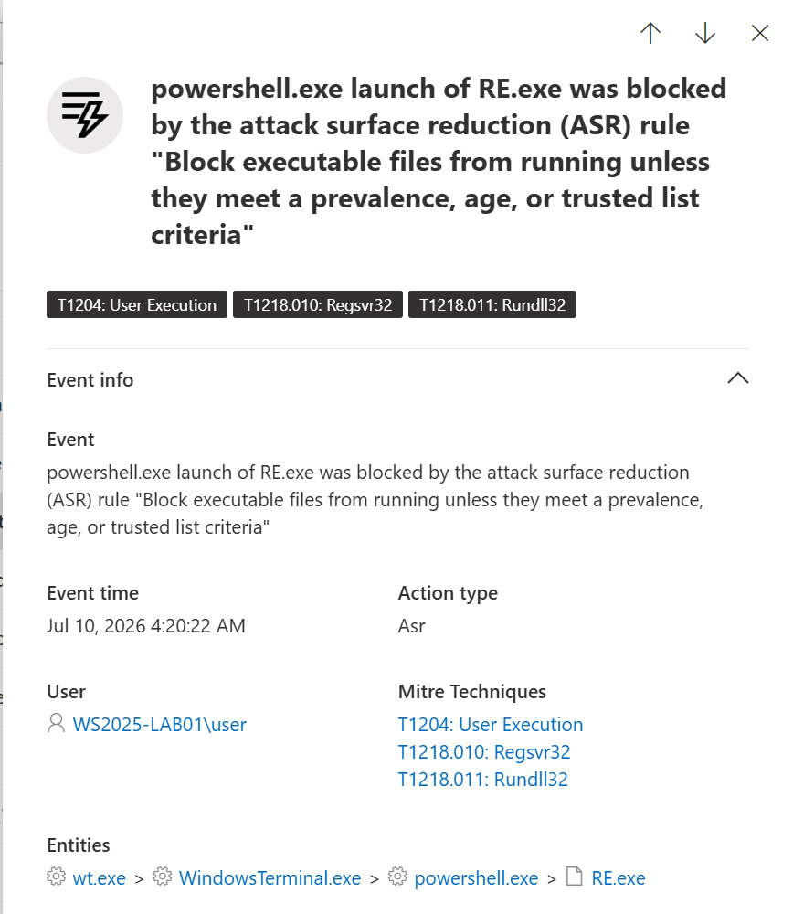
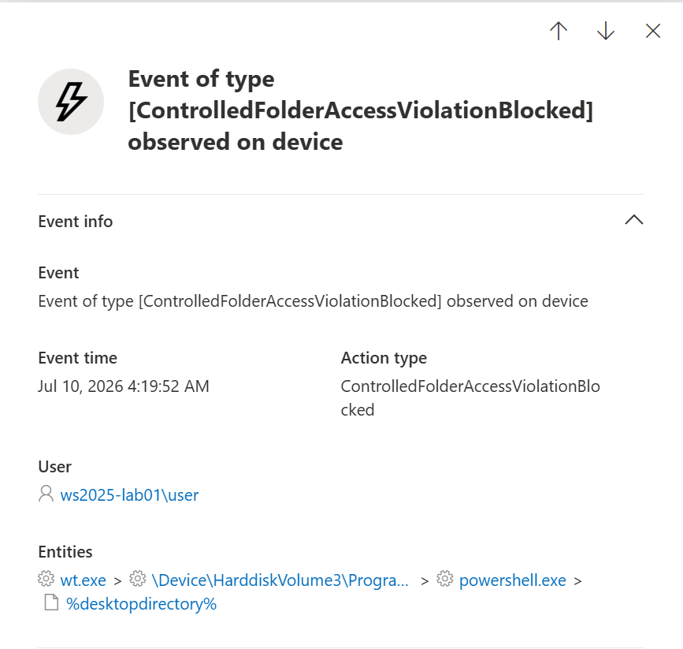
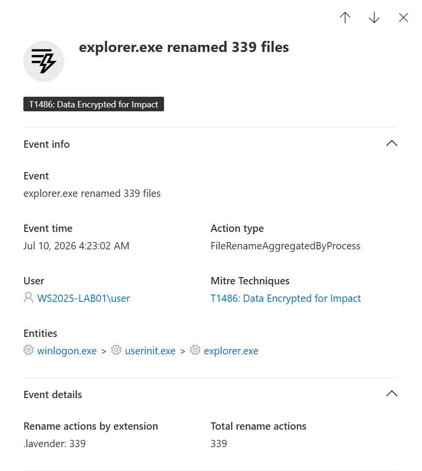
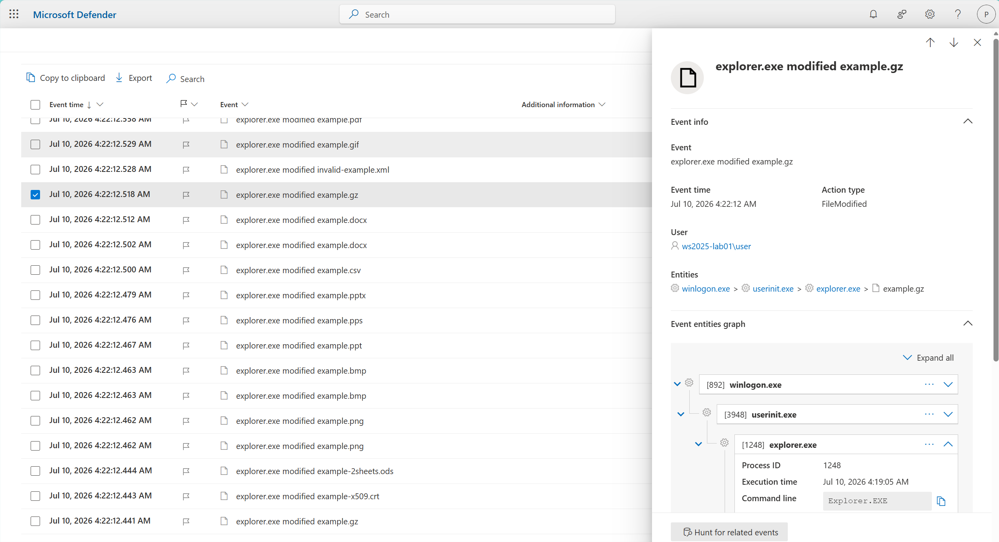
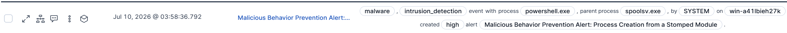
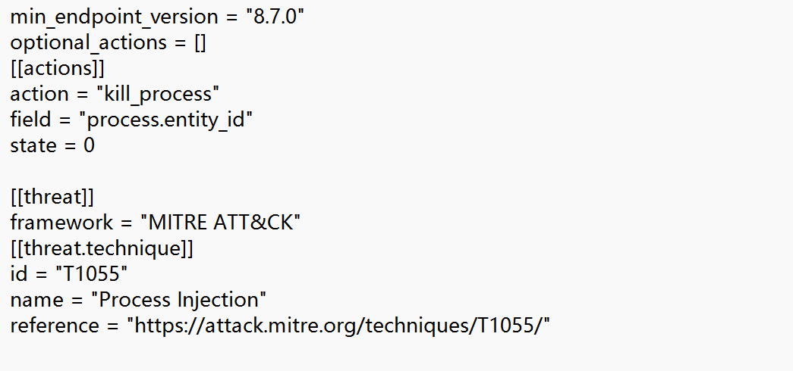
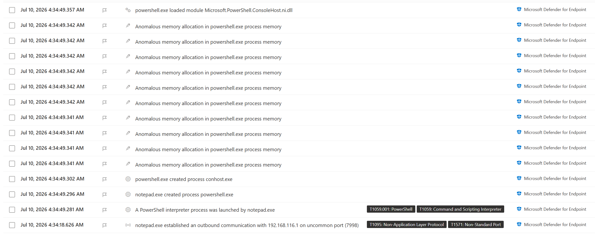
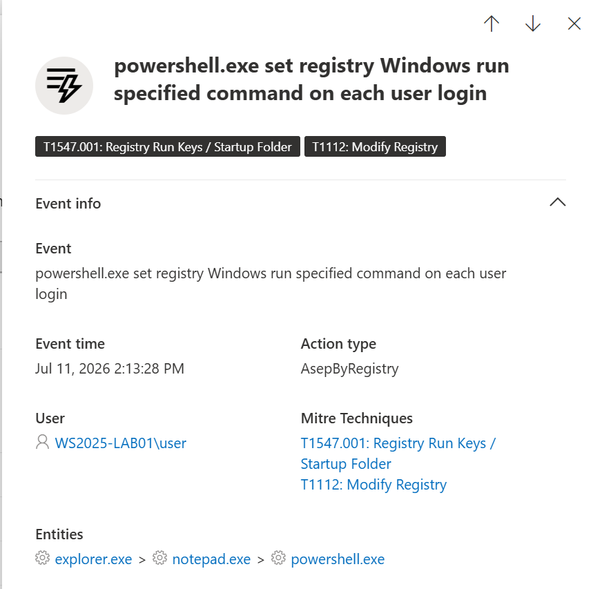

This article is the written companion to the video evaluation. Because the original video preserves the complete demonstrations, event sequence, and corresponding endpoint-console recordings, I recommend watching it through the cover above first and then using this article as technical commentary and an evidence index.
Abstract
This evaluation used two custom payloads: a ransomware test payload with a complete encryption and decryption workflow, and a minimal C2 client created specifically for the demonstration. The latter communicates only over internal HTTP, uploads a screenshot every 30 seconds, and receives server-issued PowerShell commands. The products evaluated were Elastic Security and Microsoft Defender for Endpoint Plan 2, across both administrator and standard-user contexts.
The goal was neither to rank the two products overall nor to prove that one technique can universally bypass mainstream EDRs. The question was narrower: after a payload has entered a target process through a separate injection technique, can module stomping improve the apparent memory attribution of later call sites; where does an EDR prevent activity, where does it merely preserve telemetry, and what do those differences imply for defenders?
Three Concepts to Separate
Process injection
The mechanism that places code into another process. Injection in this project does not depend on module stomping, and the specific injection method is outside this article's scope.
Module stomping
The use of a mapped module's address range to host replacement code, leaving execution addresses inside the virtual range occupied by a module image.
Call-stack spoofing
Usually refers to deliberately constructing or manipulating a broader call-chain presentation. Module stomping can influence call-site attribution, but it does not automatically fabricate a complete and genuine legitimate call chain.
How they relate here
Injection provides entry into the target; module stomping changes the module attribution of later execution. Other call-stack handling was used during preparation stages, but it is not the focus of this demonstration.
The phrase 'not quite stack spoofing' in the title therefore marks a deliberate technical boundary. What is shown is not an entirely fabricated legitimate call chain from beginning to end, but module-resolved call-site presentation. For the behavior examined here, that presentation was sufficient to have a practical effect.
Module Stomping and Its Role in This Project
Module stomping overwrites part of a legitimately loaded PE image—typically a DLL—within the process virtual address space and continues execution from the replacement code. The module remains present as a loaded image, allowing the replacement code to execute from an address inside the module's mapped range rather than from an anonymous or private executable memory region.
It Is Not the Injection Mechanism Here
Module stomping is often categorized as a process-injection technique because it commonly appears as one stage of an injection workflow. In this project, however, a separate injection mechanism transfers the payload into the target process. Module stomping is applied afterward to determine where the payload ultimately resides and executes. In other words, injection answers how the payload enters the target; module stomping answers where it executes afterward.
How It Affects Call-Stack Presentation
When stomped code calls a Windows API, the return address left on the stack can fall within the mapped range of the loaded module. A stack collector that resolves addresses by module boundaries may therefore attribute the call site to that module rather than to anonymous executable memory. The result is a module-resolved return address and a more plausible apparent origin for the call site. What changes is address attribution and telemetry presentation; the replacement code does not become legitimate original code from the DLL.
Relationship to Full Call-Stack Spoofing
Strictly speaking, module stomping is not equivalent to full call-stack spoofing. It influences the apparent memory origin of the relevant call site, but it does not automatically fabricate an entire legitimate call chain or construct synthetic frames and return addresses at every level. The specific effect examined here is the module-attributed call site: for subsequent calls originating from the stomped region, it reduces the need to construct additional synthetic frames solely to obtain module-resolved call-site presentation. Other call-stack handling was still used during preparation stages, but it is not the focus of this article.
Why Combine Injection with Module Stomping
The project initially set out to address a general PE-to-shellcode scenario. That creates two independent problems: whether the loader can correctly reconstruct the execution environment expected by the original PE, and how later call sites are attributed in endpoint telemetry once the payload begins to run. Even a loader stub that handles image loading carefully does not automatically give an arbitrary converted PE a credible or preconstructed call chain.
If the converted code executes directly from anonymous or private executable memory, return addresses associated with later API calls may point back into that region. An alternative would be to design every original program specifically around call-stack presentation, but that tightly couples the payload to its execution container and undermines the generality expected from a PE-to-shellcode tool.
The current design therefore separates responsibility into three layers: a distinct injection mechanism establishes execution inside the target process; the host then loads the selected image through the normal module-loading path; and module stomping determines the final range in which later payload code resides and executes. This describes the design boundary rather than reproduction steps. The original PE does not need prior knowledge of the target process, final module, or a particular stack layout; module attribution of later call sites is handled by the external execution container.
This approach overlaps conceptually with public work described as module overloading or module shifting, although implementations differ in image source, loading order, and intended outcome; this article therefore does not claim a new technique category. It examines only the telemetry effect produced by this implementation's combination of first establishing execution in the target, then having the host load a module normally, and finally using that mapped range for later execution.
The choice of msi.dll in this evaluation was incidental, with no deeper rationale. It is not a module uniquely suited to stomping; in fact, addressing CFG/XFG compatibility issues introduced by that choice required substantial additional effort. Those implementation details are outside this article's scope.
Evaluation Design
This evaluation used two custom payloads rather than third-party ransomware or a public C2 framework. The ransomware test payload uses AES-256-GCM and processes files on the system drive matching more than 180 extensions while skipping explicit exclusions and inaccessible paths. Processed files receive a .lavender extension and a custom header marker, and decryption recovery was also verified in the baseline scenario. This payload was completed in April 2026 and subsequently underwent multiple rounds of iteration and repeated validation.
The C2 client was a minimal prototype created specifically for this demonstration. It communicates only over HTTP inside the isolated lab, uploads a screenshot every 30 seconds, and receives server-issued PowerShell commands. Its purpose was to create an observable chain of network, process, and registry activity, not to match the capabilities of a mature C2 framework. Because the payloads differ in maturity and validation history, their detection outcomes are not treated as a direct comparison of sophistication.
The evaluation separately records whether execution completed, whether an alert was raised, whether prevention occurred, and whether non-alerted activity remained visible in endpoint telemetry. Administrator and standard-user scenarios used different target processes, so they observe behavior across security contexts rather than forming a strictly controlled variable. Any statement that execution succeeded means only that the corresponding scenario was not prevented in time; it does not imply an absence of alerts or investigable evidence.
| Scenario | Environment and context | Observed outcome |
|---|---|---|
| Ransomware baseline | No EDR, administrator | Executed and recovered |
| Injected ransomware | Elastic, administrator, target spoolsv.exe | Executed, no alert |
| Injected ransomware | MDE P2, standard user, target explorer.exe | Executed, no alert |
| C2 baseline | No EDR, standalone client | Functions verified |
| Standalone C2 | Elastic, medium integrity | Standalone C2 process terminated after the alert |
| Injected C2 | Elastic, administrator, target spoolsv.exe | Child blocked; client survived |
| Injected C2 | MDE P2, standard user, target notepad.exe | Executed, no alert |
The Elastic standard-user injection scenario was excluded from the formal results because testing repeatedly triggered a rule that appeared unrelated to the behavior under evaluation, and the cause has not yet been established. Describing it as either successful prevention or a failed bypass would be unjustified, so it is explicitly marked as untested rather than forced into a conclusion.
Ransomware: No Alert Does Not Mean No Evidence
In the Elastic administrator scenario, the payload entered spoolsv.exe and completed file processing; Elastic's ransomware bait file was encrypted as well, and no corresponding alert appeared during the test. In call-stack telemetry, each observed file rename and modification event contained a plausible, module-resolved stack: frame addresses resolved to recognized Windows modules, and the originating call site was attributed to msi.dll rather than to a private, image-unbacked executable memory address.

Elastic recorded more than ten thousand rename events but approximately one thousand modification events. The two counts are not necessarily expected to match one-to-one: sensor semantics, aggregation, sampling, deduplication, file-writing behavior, and query windows can all affect totals. This article therefore does not label the difference as product data loss; it records it as a telemetry observation requiring further validation.
In the MDE P2 standard-user scenario, relevant cloud protection, attack surface reduction, and Controlled Folder Access settings were enabled, and those controls were validated before the main test. The injection target was explorer.exe. The payload still completed file processing without raising an alert, but the device timeline retained clear behavioral evidence: in addition to aggregated file-rename activity, MDE recorded individual file-modification events attributed to explorer.exe across multiple file types.
Pre-test control validation


Device telemetry after ransomware execution


C2: Similar Activity, Different Response Scope
The standalone C2 client maintained communication in the Elastic environment until a server-issued PowerShell command added a current-user startup entry and triggered a behavioral prevention alert. The trigger was closer to PowerShell execution and startup persistence than to identification of the C2 channel itself. In the observed outcome, Elastic's response terminated the original standalone C2 process after the alert, which also ended the established communication. This differs from the injected-C2 scenario that follows.
The Elastic injected-C2 test entered spoolsv.exe with administrator privileges. Because spoolsv.exe runs in Session 0, the client could not capture the interactive desktop, but it could still receive server tasks. When it used a straightforward method to create a PowerShell child process, Elastic's Process Creation from a Stomped Module rule triggered and terminated the newly created PowerShell process. The injected spoolsv.exe remained alive, and the established C2 channel was not disrupted.

Why Was PowerShell Terminated Instead of spoolsv.exe?

In this process-start event, the top-level process.entity_id identifies the new process represented by the event, while parent information is stored under process.parent.*. Although the rule inspects the parent process thread's call stack, its response action is bound to the top-level process entity. In this specific event, the action target is therefore powershell.exe. Note that entity_id is a data-source-provided unique process identifier, not a synonym for a Windows PID; its concrete encoding is implementation-specific.
This does not mean the rule failed outright: it correctly prevented child-process creation originating from a suspicious module context. From an incident-chain perspective, however, the causal parent and the surviving communication session warrant further correlation and response. Terminating only one child process limits that action's immediate effect but may leave residual attack surface.
In the MDE P2 standard-user scenario, the client entered notepad.exe and completed HTTP communication, screenshot upload, PowerShell launch, and creation of a current-user startup entry. These events were visible in the device timeline, but no corresponding alert was raised during the test. It would therefore be inaccurate to say the product saw nothing: visibility existed, but the telemetry was not elevated into detection or prevention at that time.


Detection, Prevention, and Visibility Are Different
Detection, prevention, and visibility are related, but they are not equivalent. An endpoint may record suspicious activity without converting it into an alert, and an alert may be generated without successfully preventing the underlying operation.
This distinction is clearly reflected in the test results. Even when no alert was triggered, the telemetry still contained multiple indicators that would be unusual for the selected host processes.
For example, spoolsv.exe generated a large volume of file modification and rename events, while notepad.exe initiated HTTP connections, launched PowerShell, and was associated with the creation of an HKCU startup entry. Individually, some of these events may not be conclusive. When correlated by process identity and timeline, however, they form a substantially more suspicious behavioral sequence.
A sufficiently detailed analyst review would therefore have a reasonable chance of identifying the activity retrospectively, provided that the relevant telemetry was collected, retained, and examined. However, it would be too strong to claim that manual review would always detect it: the outcome also depends on event coverage, data quality, retention, investigation latency, and analyst workload.
This is especially important for ransomware. Retrospective visibility may help reconstruct the attack, determine its scope, and support incident response, but ransomware is highly time-sensitive. By the time large-scale file modification becomes obvious to an analyst, encryption may already have completed and the resulting damage may no longer be preventable.
The absence of an alert therefore does not necessarily mean an absence of visibility. At the same time, visibility without timely correlation and response should not be mistaken for effective prevention.
Defensive Recommendations from These Observations
Elastic already publishes multiple rules that reason over memory properties, call stacks, and subsequent behavior. The points below are not a complete assessment of the product's existing capability; they discuss possible correlation and response surfaces for the reproducible observations in this evaluation. Public rules may not represent the full internal detection engine.
1. Extend response to the parent implicated by the evidence
In the injected C2 scenario, the Process Creation from a Stomped Module rule evaluates suspicious module properties in the parent call stack, while the top-level process.entity_id on the process-start event identifies the newly created PowerShell child. The kill_process action therefore terminating PowerShell rather than spoolsv.exe is consistent with the rule's event semantics and action field; that outcome alone does not show that the rule malfunctioned.
The evidence nevertheless implicates an anomalous execution source inside the parent, and terminating one child does not mean the activity chain has ended. In this evaluation, spoolsv.exe and the existing C2 channel both survived. For high-confidence matches, the product could promote the parent to a correlated alert, memory inspection, containment, or termination candidate. Direct termination should still depend on confidence and process criticality, particularly for essential system services.
2. Extend modified-module context to file activity
Public rules already contain the concept of correlating suspicious memory origins with registry or file modification, but call sites in this ransomware scenario resolved to msi.dll rather than an obvious unbacked or private executable region. If image pages in the same process have already exhibited a high-confidence integrity anomaly and later produce high-volume writes, renames, or deletions from module-attributed call sites, evaluating each file event only by whether its address resolves to a module loses important context.
A more discriminating combination would consider module-integrity state, file-operation rate, diversity of affected directories and extensions, and the expected role of the initiating process. This does not require treating every call from module-backed memory as malicious; it allows file-behavior analytics to inherit high-confidence memory evidence already established for the process.
3. Preserve modified-module state across later activity
Short sequences such as a network library being loaded immediately after module modification can depend on module-loading order. The relevant network library may load after the anomaly, or it may already exist in the process; in the latter case, no new image-load event remains available for correlation. The same issue applies to later file, registry, and process-creation behavior.
A more stable model would retain state for the affected process entity and module range after a high-confidence module-integrity anomaly, until module unload, process exit, or explicit risk clearance. Later network connections, file modification, registry writes, image loads, and child-process creation could inherit that state. Because public rules cannot reveal the complete product engine, this should first be treated as a coverage area to verify rather than a claim that the product has no such correlation.
4. Use process-role deviation as supporting evidence
spoolsv.exe processing user documents at scale, notepad.exe making periodic HTTP connections and launching PowerShell, and explorer.exe modifying and renaming many files in a short interval all diverge from common process roles. Process name and role deviation should not be independent prevention criteria, however, because plug-ins, accessibility features, and security software can produce uncommon but legitimate behavior.
It is better used as weighted evidence alongside module-integrity anomalies, call-stack provenance, operation rate, and cross-event timing. This raises the priority of high-risk combinations without equating rarity with maliciousness.
I am not a professional detection engineer; these are limited suggestions based on this evaluation, and corrections are welcome.
Limitations
- This is not a product benchmark. Each product was tested with only a small set of configurations, versions, and activity chains, so the results cannot be generalized to all deployments.
- The two payloads differ in both maturity and validation history. The ransomware test payload was completed in April 2026 and was subsequently iterated on and repeatedly validated in comparable controlled environments, with the same overall outcome continuing through the recording of this evaluation. The C2 client, by contrast, was a minimal implementation created specifically for this demonstration and did not undergo validation over a comparable period. Their detection outcomes therefore should not be compared as if the payloads had equivalent maturity.
- The evaluation observes a complete execution chain rather than isolating module stomping as the only variable. Other call-stack handling exists during memory preparation, so not every result can be attributed to module stomping alone.
- Although the ransomware payload was repeatedly validated over several months, the testing did not predefine a fixed sample size, control group, or statistical analysis plan as a formal product benchmark would. The C2 scenarios provide only case data from the temporary implementation used here. The article therefore does not report detection rates, false-positive rates, or confidence intervals. The ransomware findings should be understood as repeated and reviewable lab observations, while the C2 findings should be treated as case observations limited to this implementation and test context.
Administrator and Standard-User Contexts
The most direct implementation difference between administrator and standard-user scenarios in this project was the set of eligible target processes: elevated scenarios used a privileged service process, whereas standard-user scenarios used a medium-integrity process in the interactive session. That difference also changes integrity boundaries, sessions, accessible resources, and potential impact, so it should not be reduced to a change in process name alone.
Standard-user testing was included to observe what the security boundaries and layered controls emphasized by Microsoft constrain under this execution model. The result means only that, with the recorded configuration and target selection, moving to a standard-user context did not by itself produce a timely prevention alert for the corresponding activity. It does not show that privilege boundaries are irrelevant or that standard-user impact can be generalized to privileged impact.
Controlled Folder Access illustrates both the value and limitation of such a boundary. It can prevent an unauthorized process from directly accessing protected locations, but process-identity authorization loses some discriminating power once hostile execution occurs inside a process that is already allowed. This does not make CFA ineffective; it still removes direct attack paths, but benefits from being combined with memory-integrity, call-stack, and behavioral correlation.
Conclusion
Module stomping did work in this evaluation, but the meaning of 'worked' must be stated in full. It improved module attribution for later call sites and was not promptly alerted on or prevented in several specific scenarios. It did not erase every anomaly, fabricate a complete and genuine legitimate call chain, or justify a conclusion that applies to every EDR, version, and configuration.
The more useful research question is how existing memory, call-stack, file, network, and process telemetry can be correlated sooner, and whether response actions address the surviving cause of the behavior. For defenders, those questions may matter more than winning or losing one isolated detection.
Acknowledgements and Additional Notes
This article reorganizes the experimental process, endpoint telemetry, and rule analysis presented in the accompanying video rather than transcribing its subtitles verbatim. Both the article and the video are limited to the technical context, observed behavior, and evidence needed to understand the findings; neither provides implementation details or reproducible procedures for the payloads, injector, or loader stub. The tools used in the video are not currently being released.
I also want to thank Elastic for publishing its behavioral prevention rules and security research. That transparency allows an ordinary university student pursuing security out of personal interest to analyze why a rule triggered, identify which process a response action targeted, and discuss results from evidence rather than guesswork. Regardless of the outcome shown here, that openness deserves recognition.
For discussion or potential collaboration, you can contact me at lobeliaerinus_columbine@outlook.com, although I may not always have time to participate promptly.
References
- Elastic Security Labs — Upping the Ante: Detecting In-Memory Threats with Kernel Call Stacks
- Elastic Security Labs — Peeling Back the Curtain with Call Stacks
- Elastic Security Labs — Doubling Down on Call Stacks
- Elastic Common Schema — Process Fields
- Microsoft Learn — Attack Surface Reduction Overview
- Microsoft Learn — Monitor Controlled Folder Access
- MITRE ATT&CK — T1055 Process Injection
- MITRE ATT&CK — T1486 Data Encrypted for Impact
- Elastic Security Labs — Call Stacks: No More Free Passes for Malware